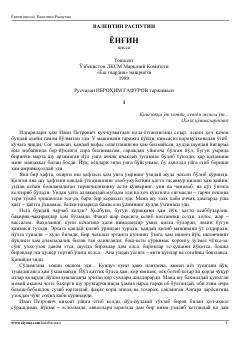

YQishloq hayoti va kutilmagan fojia tasvirlangan taʼsirli qissa.
Ushbu qissada qishloq hayoti, insoniy munosabatlar va kutilmagan fojia — yongʻin tasvirlanadi. Asar bosh qahramoni Ivan Petrovichning ogʻir mehnat va maʼnaviy tushkunlik davridagi kechinmalari orqali jamiyatdagi oʻzgarishlar va inson matonati ochib beriladi.